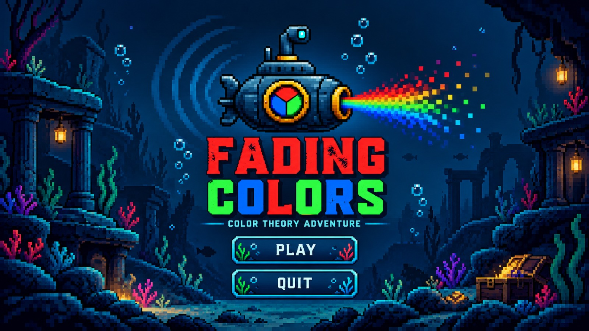

AQUARIUM FIELD GUIDEDIVE BRIEFING · 01
Before you dive
Keep the aquarium alive by reading carefully, planning ahead, and protecting every room's color.
- 01Protect the colors.Don't let the color of the rooms fade.
- 02Read the clues.Field notes are spread across the map. Read them in place to unlock quests; press E again to close a note.
- 03Complete each main quest.Main quests are located on the pearl tables in Rooms A, B, and C.
- 04Choose carefully.Failing a main quest locks that room and makes every other active room fade faster.
- 05Try side quests.Optional S.T tasks can reward you with a 12-second pause for one room. Finish side quests before the final main task.
WASDMove
↑←↓→Move
ERead / interact / close note
1 2 3Choose answer
ENTERContinue quest stage
FShimmer clues
ESCClose quest terminal
No mouse is needed once the dive begins.
AQUARIUM ARCHIVE
Fading Colors
LOCATING ROOM…
ROOM AFULL COLOR
PEARL SANCTUM 04:00
ROOM BFULL COLOR
AMBER GROTTO 04:00
ROOM CFULL COLOR
VIOLET GROTTO 04:00
QUESTS0 / 60 / 9 NOTES READ
FIELD NOTE · PRESS E TO CLOSE
COLOR THEORY
Clue discovered
This note stays in the world. Leave it and return whenever you need to read it again.
SIDE QUEST REWARD❄
Choose a room to preserve
Successful side task! Pause one room's fading clock for 12 seconds. Use 1, 2, or 3 for Rooms A, B, and C.
WASD / ARROWS · EXPLORE
AQUARIUM RUN COMPLETE
The colors remember
ROOMS SAVED0 / 3
MAIN QUESTS0 / 3
SIDE QUESTS0 / 3
CLUES READ0 / 9
ENDING SCENE PLACEHOLDER · MEMES / VIDEO LATER · ENTER: PLAY AGAIN · ESC: MAIN MENU